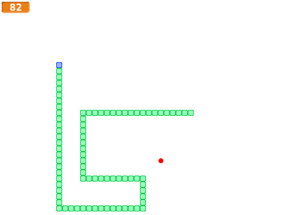
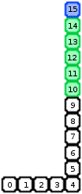
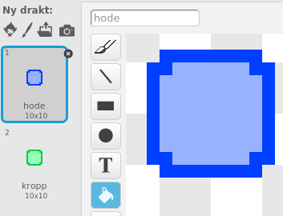

En eller annen variant av Snake har eksistert på nesten alle personlige datamaskiner helt siden slutten av 1970-tallet. Ekstra populært ble spillet da det dukket opp i Nokias mobiltelefoner i 1997, og de seneste årene har spillet til og med blitt innlemmet i New Yorks Museum of Modern Arts samling.
Selve spillet går enkelt og greit ut på å styre en slange rundt på skjermen, mens slangen må unngå å krasje i kanten av skjermen eller seg selv. Slangen vokser ved å spise epler som dukker opp tilfeldige steder på skjermen. Snake kan videreutvikles på mange måter, enten ved å lage ekstra hindringer på skjermen, ved forskjellige typer bonusepler, eller for eksempel ved at to slanger konkurrerer om å spise eplene og om å stenge hverandre inne.

Oversikt over prosjektet
Mesteparten av kodingen av Snake skal du gjøre selv. I Snake bruker vi kloner på en litt spesiell og ganske smart måte. Vi vil derfor fokusere på kloning i begynnelsen av denne leksjonen.
Plan
Steg 1: Slangen flytter på seg ... eller?
Snake er i prinsippet et enkelt spill å lage. Men en utfordring er hvordan selve slangen skal flyttes rundt. Først virker det kanskje som om man trenger en eller annen liste som husker hvor hver del av slangen er slik at man kan flytte den.
I stedet for å bruke lister skal vi bruke kloning på en litt spesiell måte. Husk at når vi kloner kopierer vi både utseendet og oppførselen til en figur. Vi vil starte med en enkel boks som vil være en del av kroppen til slangen. Denne boksen vil vi flytte, klone, flytte, klone og så videre. Trikset for at det skal se ut som om slangen flytter på seg er at de gamle klonene sletter seg selv etter litt tid.
I figuren er den blå boksen hodet til slangen, de grønne boksene er kroppen til slangen, mens de hvite boksene indikerer hvor slangen har vært (men er egentlig slettede klonede bokser).

For å vite når vi skal slette kloner bruker vi tre variabler: lengde er lengden på slangen, teller er en enkel teller som passer på hvor mange steg slangen har gått siden begynnelsen av spillet. Til slutt vil min id være et tall som forteller hvilket nummer i rekken en gitt klone er. Over er min id skrevet i hver boks, teller er 16 siden slangen har gått 16 steg, og lengde er 6.
Trikset er nå ganske enkelt. Hver klone sletter seg selv hvis min id er mindre enn teller - lengde. La oss prøve dette ut i praksis.
Sjekkliste

når jeg mottar [Nytt spill v]
sett [teller v] til [0]
sett [lengde v] til [5]
gjenta til <berører [kant v]>
sett [min id v] til (teller)
endre [teller v] med (1)
vent (0.1) sekunder
lag klon av [meg v]
gå (10) steg
slutt
Her må 10-tallet i gå 10 steg-klossen være likt med størrelsen på din boks.
når jeg starter som klon
vent til <((teller) - (lengde)) > (min id)>
slett denne klonen
Sammenlign disse skriptene med figuren og forklaringen ovenfor. Skjønner du hvordan de fungerer?
Steg 2: Styr slangen til den krasjer!
Vi skal nå kontrollere slangen med piltastene.
Det er lett å bruke piltastene til å kontrollere slangen. Siden den går av seg selv trenger vi bare å endre retningen når piltastene trykkes.
Sjekkliste
Steg 3: Epler og annet snadder
Nå skal vi gi slangen litt mål og mening. Ved å spise epler kan slangen vokse seg stor og sterk!
Eplene er ganske enkle å lage da vi bare trenger en figur som blir borte når slangen spiser dem. For å enklere kunne utvide med flere epler og slikt senere bruker vi kloner av eplene også.
Sjekkliste
gå til x: ((10) * (tilfeldig tall fra (-23) til (23))) y: ((10) * (tilfeldig tall fra (-16) til (16)))
Husk at skjermen har koordinater fra -240 til 240 i x-retning, og -180 til 180 i y-retning. Pass på at eplene dine lander godt innenfor skjermen slik at slangen kan spise dem.
Steg 4: Videreutvikling av spillet
Du står helt fritt i hvordan du vil jobbe videre med spillet ditt, men her er noen ideer som kan gjøre spillet enda morsommere å spille:
Ideer til videreutvikling
Forbedre denne siden
Funnet en feil? Kunne noe vært bedre? Hvis ja, vennligst gi oss tilbakemelding ved å lage en sak på Github eller fiks feilen selv om du kan. Vi er takknemlige for enhver tilbakemelding!
 Snake
Snake Plan
Plan